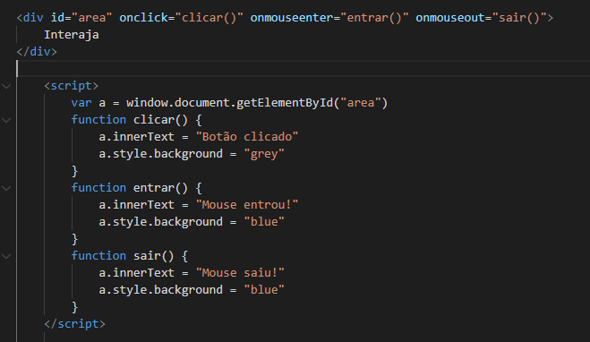
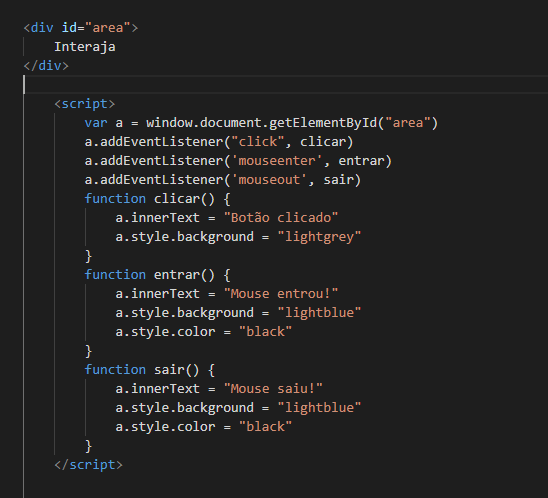

Importante salientar que nesse caso onde indicamos o eventos e chamamos a função diretamente no HTML, os eventos recebem o nome com o prefixo "on" indicando o movimento e obviamente os eventos estão descritos dentro da tag utilizada como referência
Neste caso onde usamos o addEventListener, os eventos não são descritos na tag HTML, pois serão "ouvidos" pelo comando addEventListener e nesse caso, ao definir os eventos nas funções, eles não recebem o prefixo "on", mas somente o nome do evento.
